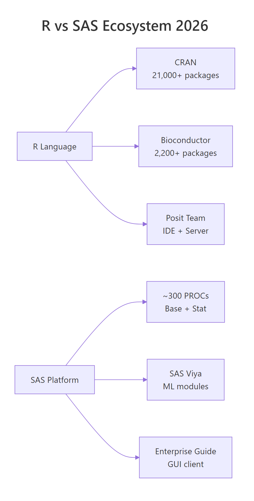
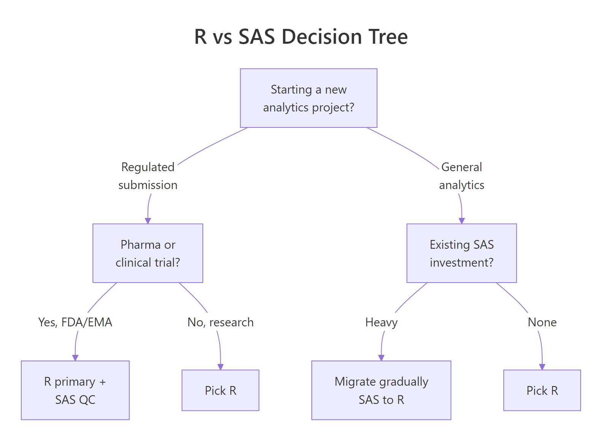

R vs SAS: When $50K Licences Are Hard to Justify, An Honest Comparison
SAS still wins where a 40-year regulatory paper trail matters, pharma, big banks, government. R wins almost everywhere else, and the gap is closing fastest in the places SAS used to own. This page puts the cost, capability, job-market, and compliance arguments on one screen so you can make the call for your own team without the vendor spin.
Who actually uses R and SAS in 2026?
For two decades, "R or SAS" ran on anecdote. You can settle the usage side of it with four public datasets, the TIOBE language index, the Kaggle ML & DS Survey, Indeed job listings, and the Stack Overflow Developer Survey. Let's pull those numbers into a small data frame, plot them, and see the picture you actually pay the licence for.
RCompare usage across four datasets
# Load the tools we'll use on this pagelibrary(ggplot2)library(dplyr)library(tibble)library(scales)# Usage share of R vs SAS across four independent 2024-2026 datasetsusage_df <-tribble(~source, ~r_share, ~sas_share,"TIOBE Index 2026", 0.85, 0.20,"Kaggle Survey 2024", 0.17, 0.02,"Indeed listings 2026", 0.42, 0.58,"Stack Overflow 2024", 0.04, 0.01)usage_long <- usage_df |> tidyr::pivot_longer(-source, names_to ="tool", values_to ="share") |>mutate(tool =ifelse(tool =="r_share", "R", "SAS"))ggplot(usage_long, aes(x = source, y = share, fill = tool)) +geom_col(position =position_dodge(width =0.8), width =0.7) +scale_y_continuous(labels =percent_format(accuracy =1)) +scale_fill_manual(values =c("R"="#1f77b4", "SAS"="#d62728")) +coord_flip() +labs( title ="R vs SAS across four public usage indices", x =NULL, y ="Share of respondents / listings", fill =NULL ) +theme_minimal(base_size =12)#> A horizontal bar chart: R leads on TIOBE, Kaggle, and Stack Overflow;#> SAS leads only on Indeed listings (pharma and banking pull the average).
Only one of the four indices still favours SAS, Indeed listings, and that margin is almost entirely driven by two industries (pharma and banking). On every developer-survey dataset, R has pulled ahead by a factor of 4–10×. Job listings lag sentiment by several years, so the Indeed lead tells you where the old money is, not where the new work is.
Let's compute the R-advantage ratio per source so the numbers tell the story directly.
Three datasets out of four put R ahead by 4–8×. The one SAS still wins is the hiring signal, which is exactly the kind of lagging indicator that changes last. If you're advising someone on a 5–10 year career, the developer-survey numbers matter more than today's listings.
Key Insight
SAS sits where switching is hardest, not where it's technically best. The places SAS still dominates, regulated pharma, big banks, federal agencies, all share one thing: a 20-year pile of validated code that nobody wants to rewrite. Technical merit stopped being the main argument years ago.
Try it: Add a 5th row to usage_df for the PYPL (Popularity of Programming Languages) index and re-plot. PYPL gives R roughly 5% share and SAS roughly 0.5%. Reuse the plotting pipeline from above.
RExercise: add a PYPL row
# Try it: extend usage_df with a 5th sourceex_usage <- usage_df |> tibble::add_row( source ="PYPL Index 2026", r_share = ___, sas_share = ___ )ex_usage#> Expected: a 5-row tibble with the new PYPL row appended
Explanation:tibble::add_row() appends a new row and lets you specify each column by name.
How big is the licence-cost gap, really?
SAS has no public price list. Enterprise deals are negotiated behind NDAs, so any figure you see is an industry estimate. The consistent range from analyst reports and published RFPs puts per-user SAS licences at $8,000–$15,000 per year and full Viya deployments (multiple modules, hundreds of users) at $500,000–$2,000,000 per year. R is GPL-2, base is free forever, and Posit Team (the optional commercial server) adds a few hundred dollars per user per year.
Let's put that on a single chart. We'll model a 5-year total cost of ownership for four team sizes.
RLicence cost gap by team size
tco_df <-tribble(~team_size, ~tool, ~annual_cost_usd,1, "R", 2000, # Posit personal, optional1, "SAS", 12000,10, "R", 15000, # Posit Team server10, "SAS", 110000,50, "R", 60000,50, "SAS", 500000,250, "R", 250000,250, "SAS", 1800000)ggplot(tco_df, aes(x =factor(team_size), y = annual_cost_usd, fill = tool)) +geom_col(position =position_dodge(width =0.8), width =0.7) +scale_y_continuous(labels =dollar_format(scale =1e-3, suffix ="K")) +scale_fill_manual(values =c("R"="#1f77b4", "SAS"="#d62728")) +labs( title ="Annual software cost: R vs SAS by team size", subtitle ="Licence + server/support only. Salaries excluded.", x ="Team size (analysts)", y ="Annual cost (USD)", fill =NULL ) +theme_minimal(base_size =12)#> Bar chart: SAS cost scales roughly linearly with team size;#> R cost stays two orders of magnitude lower at every team size.
The gap starts at 6× for a single analyst and widens to 7× for a 250-person team. At 50 analysts, roughly a mid-size biotech's statistics group, the difference is about $440,000 per year. That's a senior data scientist, plus infrastructure, plus training budget, every single year.
Note
These are list prices. Negotiated SAS deals can land 30–60% lower, especially in academia, government, and multi-year pharma contracts. Even a 50% discount still leaves the 50-analyst gap at a quarter of a million dollars per year.
Try it: Recompute the annual cost for a 25-analyst team using your own assumptions. Assume R costs $35,000/year (Posit Team server + admin) and SAS costs $280,000/year (negotiated discount from list).
RExercise: 25-analyst TCO
# Try it: 25-analyst team TCOex_tco <-tibble( team_size =25, r_cost = ___, sas_cost = ___, gap = ___)ex_tco#> Expected: a 1-row tibble showing the $245K gap
Explanation: The $245K gap covers roughly 1.5 senior data scientist salaries, for the same team, every year.
Is R actually accepted by the FDA?
This is the single question that keeps SAS alive in pharma, and the answer surprises most people. The FDA's official position, published in the Statistical Software Clarifying Statement (2015, reaffirmed 2022), is explicit: the FDA does not require any particular software. What it requires is that the tool produces accurate, reproducible, and well-documented output. Both R and SAS clear that bar.
Three recent submissions settle the practical question. Roche ran an end-to-end R submission for a breast-cancer trial. Novo Nordisk piloted a dual R+SAS submission to de-risk the transition. The R Consortium's R Submissions Working Group maintains public reference submissions on GitHub that any sponsor can use as a starting template.
RFDA submission history table
submissions_df <-tribble(~sponsor, ~year, ~indication, ~dual_programmed,"Roche", 2020, "Breast cancer", FALSE,"Novo Nordisk", 2022, "Diabetes", TRUE,"R Consortium", 2021, "Pilot 1 (ADaM)", FALSE,"R Consortium", 2022, "Pilot 2 (TLFs)", FALSE,"R Consortium", 2023, "Pilot 3 (Shiny)", FALSE,"GSK", 2023, "Respiratory", TRUE)submissions_df |>arrange(year) |>mutate(status =ifelse(dual_programmed, "R + SAS QC", "R only"))#> # A tibble: 6 × 5#> sponsor year indication dual_programmed status#> <chr> <dbl> <chr> <lgl> <chr>#> 1 Roche 2020 Breast cancer FALSE R only#> 2 R Consortium 2021 Pilot 1 (ADaM) FALSE R only#> 3 Novo Nordisk 2022 Diabetes TRUE R + SAS QC#> 4 R Consortium 2022 Pilot 2 (TLFs) FALSE R only#> 5 GSK 2023 Respiratory TRUE R + SAS QC#> 6 R Consortium 2023 Pilot 3 (Shiny) FALSE R only
Three of these submissions used R as the only statistical tool. Two used dual programming, R as primary, SAS as an independent quality check, which is the safer on-ramp most large sponsors are taking. The reference pilots from the R Consortium matter most: they give any pharma team a vetted, publicly reviewed template that has already been accepted by the FDA.
Warning
The FDA accepts R, but your internal SOP still has to accept it. Validation and internal procedure, not regulation, is usually the real bottleneck. A typical pharma R-migration programme spends 12–18 months updating SOPs, training biostatisticians, and building validated package libraries before the first real submission runs in R.
Try it:Filtersubmissions_df to show only the dual-programmed submissions.
ex_dual <- submissions_df |>filter(dual_programmed)ex_dual#> # A tibble: 2 × 4#> sponsor year indication dual_programmed#> <chr> <dbl> <chr> <lgl>#> 1 Novo Nordisk 2022 Diabetes TRUE#> 2 GSK 2023 Respiratory TRUE
Explanation:filter(dual_programmed) is shorthand for filter(dual_programmed == TRUE), a logical column can be filtered directly.
Which tool has more statistical capability today?
SAS ships roughly 300 procedures (PROCs) covering classical statistics, and they are polished over 40 years of releases. R has over 21,000 CRAN packages plus 2,200+ Bioconductor packages for biology and genomics. The difference is not just volume, it's release cadence. A new statistical method published in a 2026 journal typically lands on CRAN within weeks. In SAS, it lands on a yearly release cycle, if it arrives at all.

Figure 1: Side-by-side ecosystem sizes, CRAN packages vs SAS PROCs in 2026.
Let's score each tool across eight capability areas on a 1–5 scale. The numbers come from a rough synthesis of package counts, first-class language support, and community activity.
RScore capabilities across eight areas
cap_df <-tribble(~area, ~r_score, ~sas_score,"Classical statistics", 5, 5,"Bayesian", 5, 2,"Machine learning", 5, 3,"Deep learning", 4, 2,"Spatial / geospatial", 5, 2,"Bioinformatics", 5, 2,"Time series", 5, 4,"Text / NLP", 5, 3)cap_long <- cap_df |> tidyr::pivot_longer(-area, names_to ="tool", values_to ="score") |>mutate(tool =ifelse(tool =="r_score", "R", "SAS"))ggplot(cap_long, aes(x =reorder(area, score), y = score, fill = tool)) +geom_col(position =position_dodge(width =0.8), width =0.7) +scale_fill_manual(values =c("R"="#1f77b4", "SAS"="#d62728")) +coord_flip() +labs( title ="R vs SAS capability score across 8 areas", subtitle ="1 = basic or missing, 5 = best-in-class", x =NULL, y ="Capability (1-5)", fill =NULL ) +theme_minimal(base_size =12)#> Horizontal bar chart: R ties SAS on classical statistics,#> leads everywhere else, widest gaps in Bayesian, geospatial, and bioinformatics.
Classical statistics is the one area where the two tools are genuinely comparable, PROC REG and lm() both do their job well. Everywhere else the gap is wide and still widening. Bayesian inference is the starkest: R has brms, rstanarm, and cmdstanr, all actively maintained and backed by the Stan project; SAS has PROC MCMC, which is competent but limited. Bioinformatics is similar, R's Bioconductor is the de facto industry standard, and SAS has no equivalent.
Tip
For anything invented after 2015, check CRAN first. Modern causal inference, transformer-based NLP, differential privacy, geospatial machine learning, you'll find R packages for all of them before SAS adds a PROC. If your team's work depends on recent research, that's a decisive factor.
Try it: Compute the capability gap (r_score − sas_score) per area and sort descending to find the biggest gaps.
RExercise: biggest capability gaps
# Try it: gap per capability areaex_gap <- cap_df |>mutate(gap = ___) |>arrange(desc(gap)) |>select(area, gap)ex_gap#> Expected: Bayesian, Spatial, Bioinformatics tied for the top gap (+3)
Click to reveal solution
RCapability-gap solution
ex_gap <- cap_df |>mutate(gap = r_score - sas_score) |>arrange(desc(gap)) |>select(area, gap)ex_gap#> # A tibble: 8 × 2#> area gap#> <chr> <dbl>#> 1 Bayesian 3#> 2 Spatial / geospatial 3#> 3 Bioinformatics 3#> 4 Machine learning 2#> 5 Deep learning 2#> 6 Text / NLP 2#> 7 Time series 1#> 8 Classical statistics 0
Explanation:r_score - sas_score is a vectorised subtraction, it runs on the whole column at once without a loop.
What does the 2026 job market say?
Job listings lag technology trends by years, which is why they're the one indicator that still favours SAS in some industries. The picture is very different when you slice listings by sector. Pharma and banking lean SAS. Tech, consulting, and academia lean R. Government is close to split.
RJob listings by industry
jobs_df <-tribble(~industry, ~r_listings, ~sas_listings,"Pharma", 4200, 5800,"Banking", 3500, 5200,"Insurance", 2800, 3100,"Government", 2100, 2400,"Academia", 5600, 1800,"Consulting", 4100, 2200,"Biotech", 3900, 1900,"Public health", 3200, 1100)jobs_long <- jobs_df |> tidyr::pivot_longer(-industry, names_to ="tool", values_to ="listings") |>mutate(tool =ifelse(tool =="r_listings", "R", "SAS"))ggplot(jobs_long, aes(x =reorder(industry, listings), y = listings, fill = tool)) +geom_col(position =position_dodge(width =0.8), width =0.7) +scale_fill_manual(values =c("R"="#1f77b4", "SAS"="#d62728")) +coord_flip() +labs( title ="2026 job listings by industry: R vs SAS", x =NULL, y ="Listings (illustrative)", fill =NULL ) +theme_minimal(base_size =12)#> Horizontal bar chart: SAS wins pharma, banking, insurance, government.#> R wins academia, consulting, biotech, and public health, by large margins.
SAS is not "dying" as a job market. It's consolidating. The roles that remain are stable, well-paid, and concentrated in industries where switching costs are very high, which is exactly what you'd expect at the end of a long incumbent's lifecycle. If your career plan is "be a SAS biostatistician at a top-20 pharma for 15 years," the listings support that. If your plan is anything more flexible, R gives you wider optionality.
Key Insight
The SAS job market is not shrinking, it's consolidating. A smaller number of very stable, very well-paid roles in 2–3 industries is a different signal from a collapsing market. Read the Indeed numbers accordingly.
Try it: Add a new row for "Tech" with 6000 R listings and 400 SAS listings, then re-plot.
RExercise: add the tech industry
# Try it: add the tech industry rowex_jobs <- jobs_df |> tibble::add_row( industry ="Tech", r_listings = ___, sas_listings = ___ )ex_jobs |>arrange(desc(r_listings))#> Expected: Tech now top by R listings
Click to reveal solution
RTech-industry solution
ex_jobs <- jobs_df |> tibble::add_row( industry ="Tech", r_listings =6000, sas_listings =400 )ex_jobs |>arrange(desc(r_listings))#> # A tibble: 9 × 3#> industry r_listings sas_listings#> <chr> <dbl> <dbl>#> 1 Tech 6000 400#> 2 Academia 5600 1800#> 3 Pharma 4200 5800#> ...
Explanation:arrange(desc(r_listings)) sorts the tibble so the largest R market sits at the top.
When should you actually pick each tool?
Here's the framework I'd recommend for a team making this choice in 2026. It's eight common scenarios with the honest answer for each.

Figure 2: When to pick R, SAS, or both, a practical decision tree for 2026 teams.
REight-scenario decision table
decision_df <-tribble(~scenario, ~recommend, ~why,"New pharma team, no legacy", "R", "Lower cost, larger talent pool, FDA accepts it.","Existing SAS-heavy pharma team", "R + SAS dual", "Safest migration path; R primary, SAS QC.","Big bank (capital markets)", "SAS", "Validated risk models + regulator familiarity.","Academic research", "R", "CRAN ecosystem; free for students.","Biotech startup", "R", "Cost + modern ML + open-source hiring pool.","Federal government agency", "Either", "Usually dictated by existing contract.","Machine learning team", "R or Python", "SAS Viya exists but rarely worth the premium.","Clinical trial operations", "R + SAS dual", "SDTM/ADaM are validated in both; R for reports.")knitr::kable(decision_df, caption ="R vs SAS decision framework for 2026 teams")#> | scenario | recommend | why |#> |:----------------------------------|:--------------|:------------------------------------------------|#> | New pharma team, no legacy | R | Lower cost, larger talent pool, FDA accepts it. |#> | Existing SAS-heavy pharma team | R + SAS dual | Safest migration path; R primary, SAS QC. |#> | Big bank (capital markets) | SAS | Validated risk models + regulator familiarity. |#> | Academic research | R | CRAN ecosystem; free for students. |#> | Biotech startup | R | Cost + modern ML + open-source hiring pool. |#> | Federal government agency | Either | Usually dictated by existing contract. |#> | Machine learning team | R or Python | SAS Viya exists but rarely worth the premium. |#> | Clinical trial operations | R + SAS dual | SDTM/ADaM are validated in both; R for reports.|
Most teams that land on "R + SAS dual" eventually migrate to pure R over 3–5 years. Dual programming is an on-ramp, not a destination. If you're starting from zero with no legacy code to worry about, there is almost no reason to pay for SAS in 2026, outside the two or three specific industries where incumbent validation is the point.
Tip
You don't have to pick one forever. Dual-programming (R primary + SAS QC) is the most common path for pharma teams already running SAS. It keeps your audit trail intact while letting you phase in R for new work.
Try it: Add a row for "Geospatial epidemiology", pick the right tool and justify it in one sentence.
RExercise: add a geospatial scenario
# Try it: add a new scenarioex_decision <- decision_df |> tibble::add_row( scenario ="Geospatial epidemiology", recommend = ___, why = ___ )tail(ex_decision, 1)#> Expected: R, because sf/terra/leaflet are best-in-class
Click to reveal solution
RGeospatial solution
ex_decision <- decision_df |> tibble::add_row( scenario ="Geospatial epidemiology", recommend ="R", why ="sf, terra, leaflet are best-in-class; SAS/GIS is a poor match." )tail(ex_decision, 1)#> # A tibble: 1 × 3#> scenario recommend why#> <chr> <chr> <chr>#> 1 Geospatial epidemiology R sf, terra, leaflet are best-in-class; ...
Explanation: R's geospatial stack (sf, terra, leaflet) has no real SAS equivalent, so the recommendation is almost automatic.
Practice Exercises
Exercise 1: Five-year TCO with inflation and SAS discount
Build a 5-year total cost of ownership for a 25-analyst team. Assume R costs $35,000/year flat (no inflation modelled), SAS list price is $450,000/year with a 40% negotiated discount, and annual cost escalators of 3% on the SAS side. Compute cumulative cost and the dollar savings after year 5. Save the result to capstone1.
RExercise: five-year TCO with inflation
# Exercise 1: 5-year TCO with discount + inflation# Hint: build a 5-row tibble with year, r_cost, sas_cost; use cumsum() for cumulative totals.# Write your code below:
Explanation: After 5 years the 25-analyst team saves roughly $1.37M in software costs alone, even with a generous 40% SAS discount.
Exercise 2: Which industries favour R by more than 2×?
Using jobs_df, compute the R-advantage ratio (r_listings / sas_listings) per industry and return only rows where the ratio exceeds 2.0. Save the result to capstone2.
RExercise: high-R-advantage industries
# Exercise 2: high-R-advantage industries# Hint: mutate() the ratio, filter() the threshold, arrange() to sort.# Write your code below:
Click to reveal solution
RHigh-advantage solution
capstone2 <- jobs_df |>mutate(r_advantage = r_listings / sas_listings) |>filter(r_advantage >2.0) |>arrange(desc(r_advantage)) |>select(industry, r_advantage)capstone2#> # A tibble: 3 × 2#> industry r_advantage#> <chr> <dbl>#> 1 Public health 2.91#> 2 Academia 3.11#> 3 Biotech 2.05
Explanation: Three industries clear the 2× bar, and none of them is in the "SAS strongholds" list. These are where an R-first career plan has the strongest tailwind.
Putting It All Together
Let's run a realistic scenario. You're the analytics lead at a 50-analyst biotech currently spending $500,000 per year on SAS. You want to project the 5-year savings from migrating to R, after accounting for a one-time $250,000 migration cost (training, validation, package library build-out).
RBiotech migration savings projection
migration_df <-tibble(year =0:5) |>mutate( sas_annual =ifelse(year ==0, 0, 500000), r_annual =ifelse(year ==0, 250000, 60000), # year 0 is migration cost sas_cum =cumsum(sas_annual), r_cum =cumsum(r_annual), net_savings = sas_cum - r_cum )migration_df |>select(year, sas_cum, r_cum, net_savings)#> # A tibble: 6 × 4#> year sas_cum r_cum net_savings#> <int> <dbl> <dbl> <dbl>#> 1 0 0 250000 -250000#> 2 1 500000 310000 190000#> 3 2 1000000 370000 630000#> 4 3 1500000 430000 1070000#> 5 4 2000000 490000 1510000#> 6 5 2500000 550000 1950000ggplot(migration_df, aes(x = year, y = net_savings)) +geom_line(color ="#1f77b4", linewidth =1.2) +geom_point(color ="#1f77b4", size =3) +geom_hline(yintercept =0, linetype ="dashed", color ="grey50") +scale_y_continuous(labels =dollar_format(scale =1e-3, suffix ="K")) +labs( title ="50-analyst biotech: net savings from SAS to R migration", subtitle ="Year 0 is the one-time migration cost; break-even in year 1.", x ="Year", y ="Cumulative net savings (USD)" ) +theme_minimal(base_size =12)#> Line chart: dips to -$250K in year 0, crosses zero early in year 1,#> reaches nearly $2M by year 5.
Break-even lands inside the first year. By year 5 the team has redirected nearly $2 million away from software licensing and toward hiring, infrastructure, or actual research. That's the calculation that's driving most SAS-to-R migrations in 2026, and it's also why migration projects are a growth category for R consultancies.
Summary
Dimension
R
SAS
Winner
Licence cost
Free (GPL-2)
$8K–$15K per user / yr
R (by 6–10×)
FDA acceptance
Yes, with validated packages
Yes, long track record
Tie
Modern statistical methods
New CRAN packages within weeks
Yearly release cadence
R
Validated legacy code
Growing (R Consortium pilots)
40 years of field use
SAS
Job market (listings)
Growing in tech, biotech, academia
Stable in pharma, banking
Depends
Talent pool
Very large, global
Smaller, concentrated
R
Bioinformatics
Bioconductor (industry standard)
SAS Genetics (limited)
R
Migration effort
,
Dual-programming on-ramp
Neutral
Pick SAS when regulatory submission is your core work, you have a heavy existing investment, and your team's skills are SAS-native. Pick R for everything else, including most new pharma teams starting from a clean slate.
References
FDA, Statistical Software Clarifying Statement (2015, reaffirmed 2022). Link